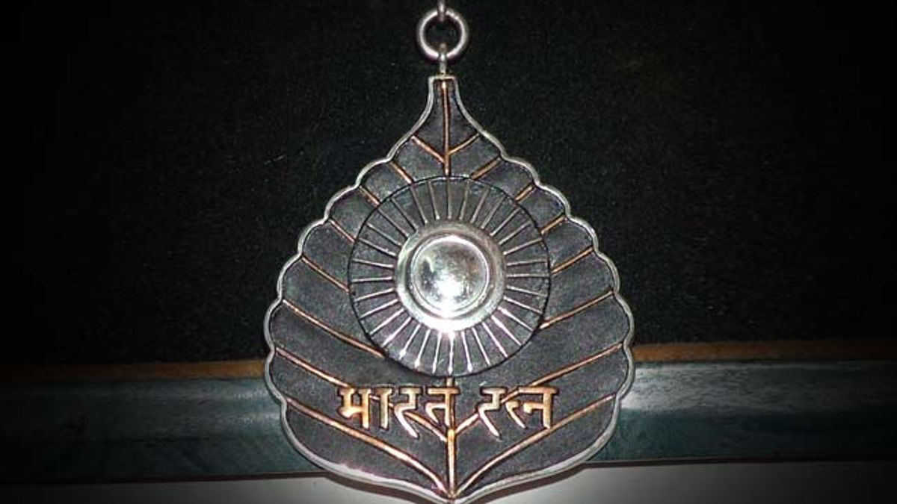
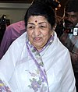
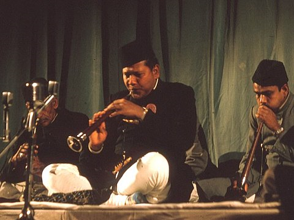
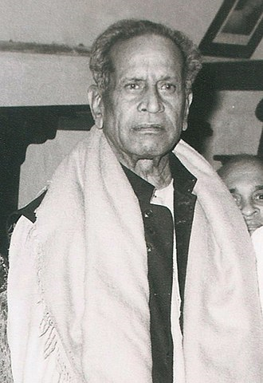
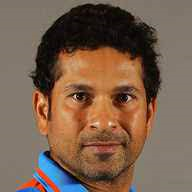
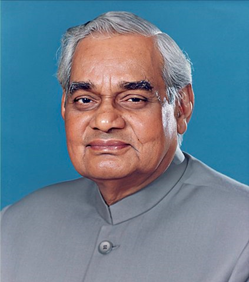
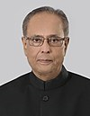
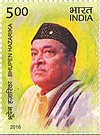
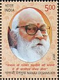

Bharat Ratna awardees

Lata Mangeshkar (2001)
Widely credited as the "nightingale of India", playback singer Mangeshkar
started her career in the 1940s and has sung songs in over 36 languages. In 1989, Mangeshkar was awarded the Dadasaheb Phalke Award, India's highest award in cinema.

Bismillah Khan (2001)
Hindustani classical shehnai player, Khan played the instrument for more than eight decades and
is credited to have brought the instrument to the centre stage of Indian music.

Bhimsen Joshi (2009)
A Hindustani classical vocalist from Karnataka, Joshi was a disciple of Kirana gharana,
an Indian musical school. He is widely known for the Khyal genre of singing with a "mastery over rhythm and accurate notes".

C.N.R Rao (2014)
The recipient of Honorary Doctorates from 63 Universities including Purdue, IIT Bombay, Oxford, chemist and professor Rao has worked prominently in the fields of
Solid State and Materials Chemistry, Spectroscopy and Molecular Structure. He has authored around 1600 research papers and 48 books.

Sachin Tendulkar (2014)
Having debuted in 1989, Tendulkar played 664 international cricket matches in a career spanning over two decades. He holds various cricket records including the only player to have scored one hundred international centuries, the first batsman to
score a double century in a One Day International and the only player to complete more than 34,000 runs in both ODI and Test cricket.

Atal Bhihari Vajpayee (2015)
Parliamentarian for over four decades, Vajpayee was elected nine times to the Lok Sabha, twice to the Rajya Sabha and served as the Prime Minister of India for three terms; 1996,
1998, 1999–2004.[55] He was Minister of External Affairs during 1977–79 and was awarded the "Best Parliamentarian" in 1994.

Madan Mohan Malaviya(2015)
Scholar and educational reformer Malaviya is a founder of Akhil Bharatiya Hindu Mahasabha (1906) and Banaras Hindu University and served as the university's vice-chancellor from 1919 until
1938. He was the President of Indian National Congress for four terms and was the Chairman of Hindustan Times from 1924 to 1946.

Pranab Mukherjee (2019)
Mukherjee was an Indian politician who served as the 13th President of India from 2012 until 2017. In a political career spanning five decades, Mukherjee had been a senior leader in the Indian National Congress and had occupied several
ministerial portfolios in the Government of India. Prior to his election as President, he was Union Finance Minister from 2009 to 2012.

Bhupen Hazarika (2019)
Hazarika was an Indian playback singer, lyricist, musician, poet and film-maker from Assam, widely known as Sudhakantha. His songs, written and sung mainly in the Assamese language by himself,
are marked by humanity and universal brotherhood and have been translated and sung in many languages, most notably in Bengali and Hindi.

Nanaji Deshmukh (2019)
Chandikadas Amritrao Deshmukh also known as Nanaji Deshmukh was a social activist from India. He worked in the fields of
education, health, and rural self-reliance. He was a leader of the Bharatiya Jana Sangh and also a member of the Rajya Sabha.